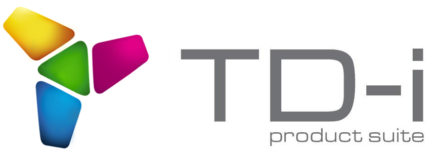
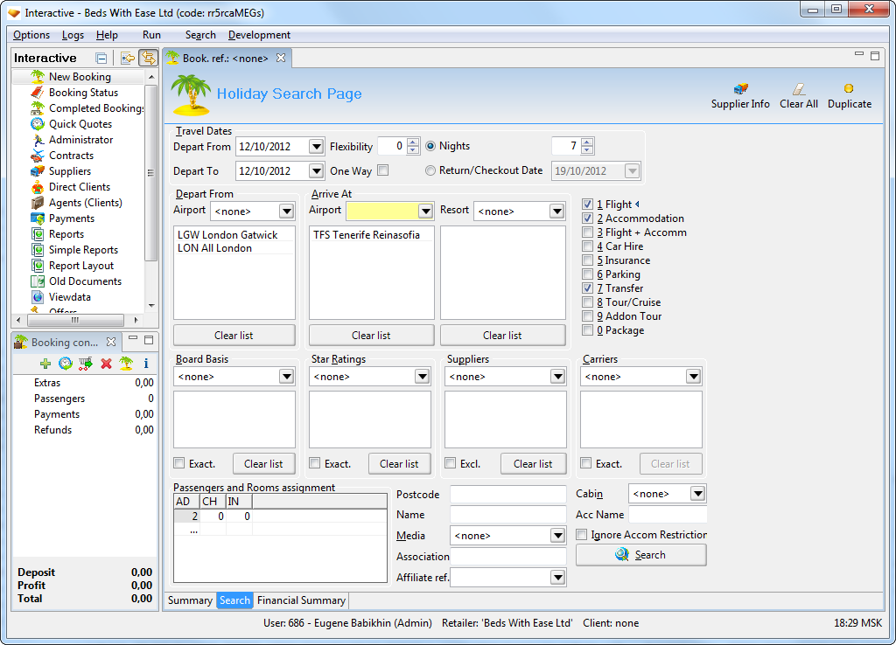
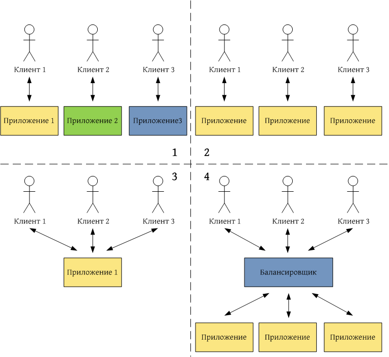
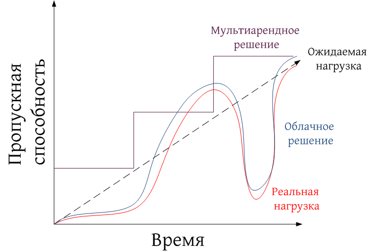
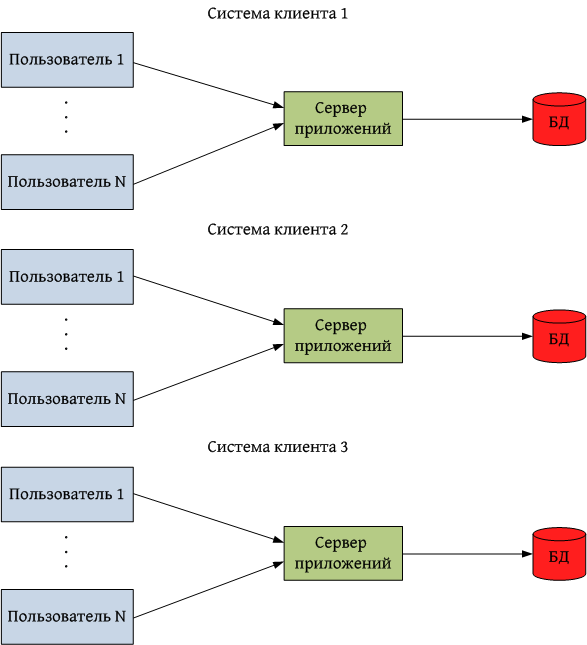
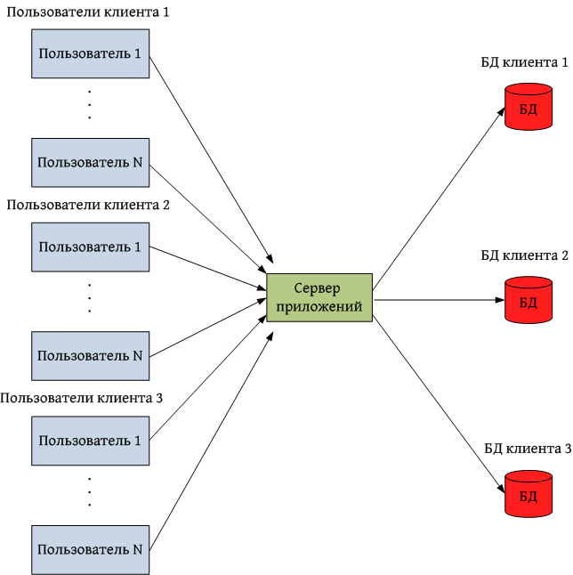
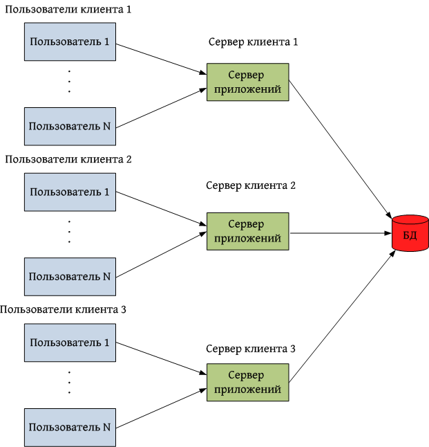
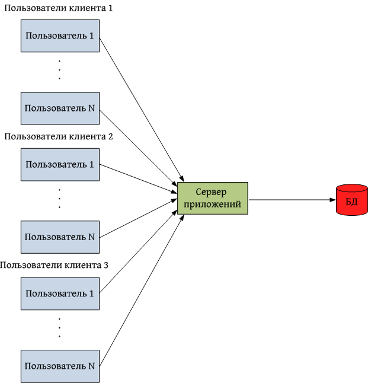
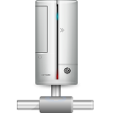

Чем мы занимаемся?
Программный комплекс 
Обеспечивает комплексную автоматизацию деятельности турагентств и туроператоров.Ключевые особенности системы:
- Многозвенное распределенное приложение на платформе Java EE + PostgreSQL
- Обеспечивает работу в режиме высокой нагрузки
- Имеет высокую степень масштабируемости (до 20 серверов в одном кластере)
Приложение для колл-центра

Пример B2C веб-сайта
Что же такое мультиарендность?
Определение мультиарендности
Мультиарендность («multitenancy» — «множественная аренда») - это принцип построения архитектуры ПО, когда один экземпляр приложения обслуживает множество организаций-клиентов («арендаторов»)Уровни развития мультиарендности

Мультиарендность ≠ облачные технологии

Зачем нам понадобилась мультиарендность?
Постановка задачи
- Крупный туроператор хочет продавать доступ к своей системе Interactive небольшим турагентствам в рамках франшизы
- Необходимо разграничить доступ к данным этого туроператора
- Нужно уменьшить стоимость пользования системой для небольших турагентств
Преимущества мультиарендности
- Минимизация инфраструктурных расходов
- Более рациональное использование аппаратных ресурсов
- Минимизация дублирования общих данных
- Хорошая масштабируемость в пределах одного кластера
Недостатки мультиарендности
- Невозможность полностью исключить взаимное влияние клиентов друг на друга
- Сложность оценки нагрузки, производимой каждым конкретным клиентом
- Сложность обеспечения полной изоляции данных клиентов
- Невозможность обновления ПО одного клиента без обновления остальных
- Сложность переноса клиента на выделенную систему
 Мультиарендная архитектура
Мультиарендная архитектура
Существует 4 вида архитектуры приложения с точки зрения мультиарендности
Выделенные сервера приложений и БД

Общий сервер приложений, выделенные БД

Выделенные сервера приложений, общая БД

Общий сервер приложений, общая БД

 Общий сервер приложений
Преимущества:- Рациональное использование аппаратных ресурсов
- Добавление нового клиента не требует подъема нового сервера
- Нужно знать, в контексте какого клиента выполняется код
- Высокая степень влияния клиентов друг на друга по производительности
Общая база данных
Варианты реализации:- Отдельная схема на каждого клиента
- Отдельный комплект таблиц для каждого клиента
- Общие таблицы для всех клиентов
Общая база данных
Преимущества:- Позволяет объединить максимальное число клиентов на одной СУБД
- Можно использовать единый пул соединений с БД
- Удобно выполнять запросы по данным сразу нескольких клиентов
- Можно легко делать ссылки между общими и частными данными
- Большой размер БД
- Сложность создания бэкапа данных отдельного клиента
- Удаление клиента проблематично
Выбор архитектуры
Оптимальное решение в нашем случае - общий сервер приложений и общая БД
- Клиенты относительно небольшие, их взаимным влиянием можно пренебречь
- Гибкие ограничения на видимость данных между клиентами
- Архитектура с наличием общих данных хорошо подходит для моделирования франшизы
- Удаления клиентов происходят нечасто
- Уже имеется инфраструктура для хранения идентификатора клиента в контексте выполняемого кода
 Поддержка мультиарендности в Java EE
Поддержка мультиарендности в Java EE
- Спецификация Java EE 7 обеспечивает поддержку мультиарендности на уровне всех сервисов, в т.ч. JPA, JMS, EJB, JNDI
- В Hibernate 4.x штатно поддерживается архитектура с выделенными БД и выделенными схемами внутри одной БД, поддержка общей БД с дискриминатором запланирована в Hibernate 5.0
- В Hibernate 3.x штатной поддержки нет, однако есть механизм фильтров
Поддержка мультиарендности на других платформах
- C#: nHibernate также имеет механизм фильтров
- Ruby on Rails: есть фреймворки, решающие проблему мультиарендности на уровне модели данных
- Python: есть фреймворк для построения мультиарендных веб-сайтов на базе Django
- PHP: многие CMS могут быть сконфигурированы для работы в мультиарендном режимы (например, Wordpress Multisite, Joomla, Orchard, Drupal и др.)
Сложности реализации мультиарендности
- Классифицикация модели данных из более, чем 400 сущностей
- Особого внимания потребовала подсистема отчетов
- Администраторы системы должны иметь доступ к данным всех клиентов
- Нужно обеспечить безболезненный механизм миграции любой из имеющихся клиентских систем к новой модели
- Анализ большого объема кода на предмет наличия идентификатора клиента в текущем контексте
- Весь функционал системы должны быть протестирован
Результаты
- Разработка заняла небольшое время (2.5 календарных месяца, или около 6 человеко-месяцев)
- Общее быстродействие системы не пострадало
- Примененное решение достаточно элегантно с точки зрения качества кода
- Технология была успешно внедрена в production
 Выводы
Выводы
- Внедрение технологии позволяет перейти к модели продаж ПО SaaS
- Затраты на модернизацию системы полностью окупаются за счет снижения инфраструктурных расходов
- Мультиарендность позволяет снизить порог доступности системы для небольших клиентов
- Важно уделить особое внимание изоляции клиентов друг от друга